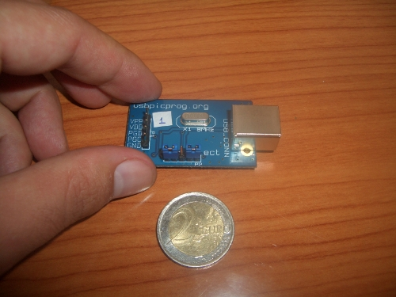
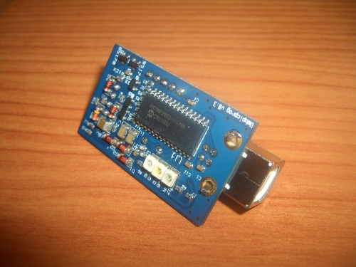
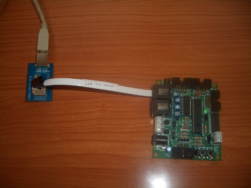

Esta semana he recibido el usbpicprog, un programador para los microprocesadores PIC. Es hardware libre2, diseñado con Kicad. Me enteré de su existencia gracias a Carlos GarcÃa Saura. Me ha costado 25€, incluyendo los gastos de envío.

En esta foto se muestra la parte inferior. Utiliza un PIC18f2550 y varios componentes smd. La comunicación con el PC es a través del USB. Lo que más me ha gustado, y la razón por la que me lo he comprado, es que es hardware libre2. Esto significa que es hardware libre (por lo que sus esquemas están disponibles) y además está diseñado usando herramientas libres (Kicad). En este repositorio están los esquemas. El hardware libre, poco a poco se va extendiendo.

El programador lo he probado con una Skypic, corriendo el software en Linux. Ha funcionado perfectamente. He hecho un cable que se conecta al usbpicprog por un lado y por el otro al conector RJ11 de la Skypic (el mismo por el que se conecta el ICD2). ¡Hardware libre grabando hardware libre!
Genial!
Sabía que te gustaría ese programador 😉
Saludos!
Hola Carlos!
Me ha encantado. Muchísimas gracias 🙂
Hola Obijuan, podias decirme como conseguir el grabador Usbpicprog… soy de barcelona.
Gracias.
Hola Fco Javier,
Lo he comprado desde la propia web del usbpicprog. En la parte de la derecha encontrarás el enlace “usbpicprog shop”. Lo puedes pagar bien por transferencia o por Paypal. Yo lo hice por paypal y al día siguiente me enviaron un correo diciéndome que ya habían realizado el envío. En unos 5 días lo recibí en casa.